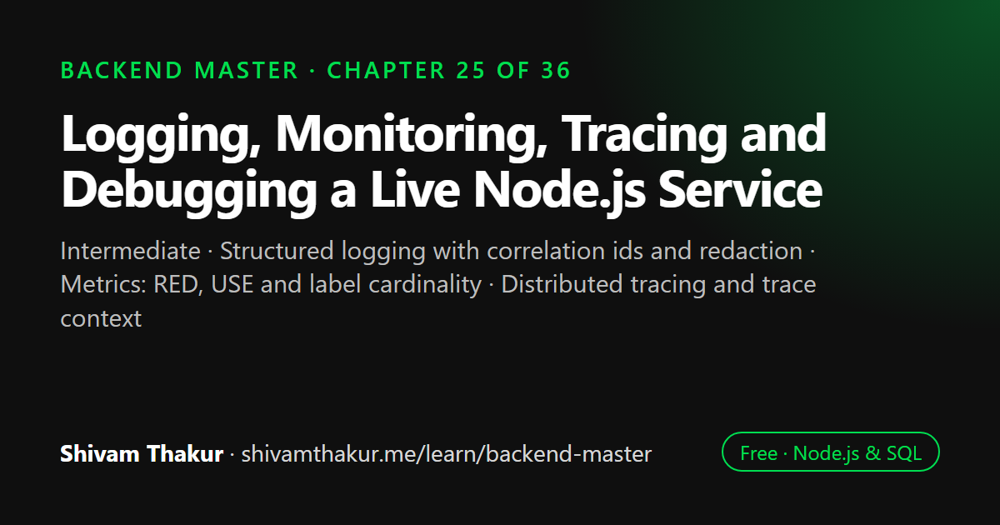

Chapter 25 of 36 · Intermediate
Logging, Monitoring, Tracing and Debugging a Live Node.js Service
Logging, Monitoring and Debugging — Seeing Inside a Running System

You cannot attach a debugger to production, so the system must explain itself. This chapter builds structured logs with correlation ids and redaction, RED metrics with route labels, a trace across two services, liveness and readiness checks, SLO maths, and diagnoses event-loop blocking, a memory leak and a CPU hotspot.
In this chapter you will learn
- Structured logging with correlation ids and redaction
- Metrics: RED, USE and label cardinality
- Distributed tracing and trace context
- Liveness and readiness probes and graceful shutdown
- Profiling event-loop lag, memory and CPU
25.0 Why This Chapter Matters
Tests (Chapter 24) tell you the code was right before it shipped. Production is where the real questions arrive, usually at 3 a.m., from a customer, a manager, or a pager:
- "Checkout is slow for some people. Why?"
- "Did the deploy break something?"
- "Why did this one order fail?"
- "Memory keeps climbing and then the server restarts."
- "Is it the database, the cache, or us?"
You cannot attach a debugger to a server handling 500 requests per second. Observability is the discipline of building a system so you can answer questions about its behaviour from the outside, using the data it emits. It has three classic pillars, and this chapter implements and measures each on a ShopLine service:
| Pillar | Question it answers | Shape of data | Tool here |
|---|---|---|---|
| Logs | What happened in this request? | Discrete events with detail | pino JSON logs |
| Metrics | How is the system behaving overall, and is it getting worse? | Numbers over time | prom-client (Prometheus format) |
| Traces | Where did the time go across services? | A tree of timed spans | OpenTelemetry |
Then we cover health checks, alerting and SLOs, and debugging a live Node.js process: event-loop lag, memory leaks with heap snapshots, and CPU profiling, each reproduced and measured.
25.1 Logging: What to Log, and How
25.1.1 console.log is not logging
console.log('order created', order) is fine for learning and awful for production:
- Unstructured text can't be filtered or aggregated ("show all failed payments over ₹10,000 in the last hour").
- No levels, so you can't turn verbosity down in production or up while debugging.
- No context: which request? which user? which server?
- Synchronous writes (when stdout is a pipe or file) can slow the event loop.
- Secrets leak into it.
25.1.2 Structured logging with pino
Emit one JSON object per line, with consistent field names. A log aggregator (Loki, Elasticsearch/OpenSearch, CloudWatch, Datadog) can then index and query every field. Our tested ShopLine app logs each request like this (real output, one line):
{"level":30,"time":"2026-11-16T10:16:18.433Z","service":"shopline-api","env":"test",
"requestId":"req-abc-123","traceId":"adccaa866e6c2068b7f50ffb554ae070",
"req":{"method":"GET","url":"/products/42","headers":{"authorization":"[REDACTED]"}},
"route":"/products/:id","status":200,"duration_ms":6.2,"msg":"request completed"}Notice what's there: who/where (service, env), correlation (requestId, traceId), what (method, route, status), how long (duration_ms), and a redacted authorization header.
The setup that produces it:
const logger = pino({
level: process.env.LOG_LEVEL ?? 'info',
base: { service: 'shopline-api', env: process.env.NODE_ENV },
timestamp: pino.stdTimeFunctions.isoTime,
redact: { paths: ['req.headers.authorization', 'req.headers.cookie', '*.password', 'password', '*.token', 'card.number'], censor: '[REDACTED]' },
mixin: () => { const c = als.getStore(); return c ? { requestId: c.requestId, traceId: c.traceId } : {}; }, // add request context to EVERY line
serializers: { err: pino.stdSerializers.err },
});25.1.3 Log levels
| Level | Use for | Production default |
|---|---|---|
fatal |
The process cannot continue | on |
error |
An operation failed and needs attention (a 5xx, an unhandled exception) | on |
warn |
Unexpected but handled (a 4xx, a retry, a slow query, a deprecated call) | on |
info |
Normal business events (request completed, order created) | on |
debug |
Detail for developers | off (enable per-service when diagnosing) |
trace |
Very verbose internals | off |
Our access-log middleware picks the level from the status code: 5xx → error, 4xx → warn, else info, so a dashboard of level >= 50 is your "something is broken" feed without alerting on every user typo (400).
25.1.4 Correlation IDs: one request, one thread through every line
The most valuable field in your logs is a request ID. Every line produced while handling a request carries the same one, so you can pull the whole story with one query. Passing it through every function argument is miserable, so Node's AsyncLocalStorage (Chapter 5) carries it implicitly:
app.use((req, res, next) => {
const requestId = req.headers['x-request-id']?.toString().slice(0, 64) || crypto.randomUUID(); // honour the caller's id, else mint one
res.setHeader('x-request-id', requestId); // give it back to the client
als.run({ requestId, traceId }, next); // everything downstream sees it
});The mixin above then stamps requestId onto every logger.info(...) call anywhere in the request's call tree, without any function taking a requestId parameter. When a customer reports "my order failed," support asks for the x-request-id header (or shows it in the error page), and you search for exactly that.
Always return the id to the client in error responses. Ours:
client sees: 500 {"title":"Internal error","requestId":"req-boom-1"}The customer sends "req-boom-1" and you find the full stack trace in one query, without ever having shown the stack to the customer.
25.1.5 What to log, and what never to log
Log: request summaries (method, route template, status, duration), business events (order created, payment failed with reason code), security events (login failure, permission denied, token reuse: Chapter 21), external-call outcomes (target, latency, status), retries and circuit-breaker changes, startup configuration (non-secret), and unhandled errors with the full error object and stack.
Never log: passwords, tokens, API keys, session ids, full card numbers/CVV, government ids, health data, or raw request bodies by default. Treat logs as a data store with a long life and a wide audience: they're copied to vendors, searched by many engineers, and retained for months.
25.1.6 Redaction: test it, and know its limits
pino's redact censors fields by path before writing. We tested it:
{"... "body":{"email":"a@b.com","password":"[REDACTED]"},"msg":"login attempt"}
"hunter2" or "SECRET-TOKEN" anywhere in those log lines? falseBut the test of the error path exposed a limit, and I think this is the most important logging-security lesson in the chapter. A handler threw:
throw new Error('database exploded: password=hunter2 at 10.0.0.5');and the error log line contained exactly that text:
log has : {"level":50,"requestId":"req-boom-1","errType":"Error","errMessage":"database exploded: password=hunter2 at 10.0.0.5","stack0":"at file:///…"}Path-based redaction cannot see secrets embedded in free-text messages. redact knew password was a field name; it had no idea a string contained one. Real-world sources of this: database drivers that include connection strings or SQL with literal values in error messages, HTTP client errors that include the URL (with ?api_key=…), and JSON.stringify(req.body) inside a message. Defences, in order: (1) never put sensitive values in error messages or interpolated log text; (2) log structured fields, not concatenated strings, so redaction paths apply; (3) scrub known patterns (URLs with credentials, Bearer …, long hex/base64 tokens, card-number regexes) in a custom serializer or at the log pipeline; (4) apply least-access to the log system; (5) have a test with canary secrets that fails the build if they appear in output.
25.1.7 Errors: log the object, not the message
logger.error({ err }, 'unhandled error'); // pino's err serializer records type, message AND stack
// not: logger.error('error: ' + err.message) // loses the stack and the typeLog an error once, at the boundary that handles it (the error middleware), not at every layer it passes through (that produces five copies of one failure and makes error counts meaningless).
25.1.8 Logging performance
Logging sits in the hot path. We wrote 200,000 identical lines to a file three ways:
console.log (stdout redirected to a file) 200000 lines: 15344 ms (13,034 lines/s)
pino, synchronous destination 200000 lines: 11519 ms (17,363 lines/s)
pino, asynchronous destination (buffered) 200000 lines: 3425 ms (58,401 lines/s)Buffered asynchronous pino was about 4.5× faster than console.log and 3.4× faster than synchronous pino (a slow disk and Windows exaggerate the absolute times; the ratio is the lesson). The trade-off with asynchronous logging is that a crash can lose the last buffered lines; call logger.flush() on shutdown and in uncaughtException/SIGTERM handlers, and for the most critical events consider synchronous writes. (My event-loop-delay readings during the synchronous runs showed 0, because the monitor could not even sample while the loop was blocked: the synchronous loop hid its own blocking.) In containers the usual rule is write JSON to stdout and let the platform collect it (Chapter 31); don't write log files or rotate them inside the container.
25.1.9 Sampling and volume
At high traffic, logging every successful request is expensive in CPU and money. Typical policy: log every error and warning; sample successes (1%); keep debug off; set retention by value (7–30 days hot, longer archived). Don't alert on log volume; alert on metrics (§25.2).
25.2 Metrics: Numbers Over Time
Logs describe single events. Metrics aggregate behaviour: counters, gauges, and histograms sampled over time and cheap to store, so you can see trends, set alerts, and compare before/after a deploy.
25.2.1 The metric types
| Type | Meaning | Example |
|---|---|---|
| Counter | Only goes up (resets on restart) | shopline_orders_created_total; query as a rate |
| Gauge | Goes up and down | http_requests_in_flight, queue depth, heap used |
| Histogram | Distribution into buckets (latency!) | http_request_duration_seconds; compute p50/p95/p99 |
| Summary | Client-side quantiles (not aggregatable across servers) | rarely preferred over histograms |
25.2.2 What to measure: the RED and USE methods
- RED (for services): Rate (requests/second), Errors (failed requests/second), Duration (latency distribution). The golden question for every endpoint.
- USE (for resources: CPU, memory, disk, DB connections, queue): Utilisation, Saturation (queueing/waiting), Errors.
- Google's four golden signals: latency, traffic, errors, saturation. RED + saturation.
Our tested instrumentation records the three RED signals for every route with one histogram, plus an in-flight gauge and a business metric:
const httpDuration = new client.Histogram({ name: 'http_request_duration_seconds', help: 'HTTP latency',
labelNames: ['method', 'route', 'status'], buckets: [0.005, 0.01, 0.025, 0.05, 0.1, 0.25, 0.5, 1, 2.5] });
const orders = new client.Counter({ name: 'shopline_orders_created_total', help: 'business metric: orders', labelNames: ['payment_method'] });After 30 product requests, 12 slow ones, a few orders, a crash and a 404, the /metrics endpoint (Prometheus text format) showed:
http_request_duration_seconds_count{method="GET",route="/products/:id",status="200"} 32
http_request_duration_seconds_count{method="POST",route="/login",status="200"} 1
http_request_duration_seconds_count{method="GET",route="/boom",status="500"} 2
http_request_duration_seconds_count{method="GET",route="/slow",status="200"} 12
http_request_duration_seconds_count{method="POST",route="/orders",status="201"} 2
http_request_duration_seconds_count{method="GET",route="unmatched",status="404"} 1
shopline_orders_created_total{payment_method="upi"} 1
shopline_orders_created_total{payment_method="card"} 1One metric yields rate (count over time), errors (status=~"5.."), and duration. The default collectDefaultMetrics() also exports process_cpu_seconds_total, process_resident_memory_bytes, nodejs_heap_size_used_bytes, and nodejs_eventloop_lag_seconds (all present in our run): your first-line saturation signals for Node.
25.2.3 Reading a histogram
Buckets are cumulative ("≤ this value"). For /slow (which sleeps 40–240 ms), 12 requests:
http_request_duration_seconds_bucket{le="0.05", route="/slow",…} 0 ← none finished within 50 ms
http_request_duration_seconds_bucket{le="0.1", route="/slow",…} 3 ← 3 within 100 ms
http_request_duration_seconds_bucket{le="0.25", route="/slow",…} 12 ← all 12 within 250 ms
http_request_duration_seconds_bucket{le="+Inf", route="/slow",…} 12So the median lies between 100 and 250 ms, and Prometheus estimates percentiles by interpolating within buckets (histogram_quantile(0.99, rate(..._bucket[5m]))). Choose bucket boundaries around your latency targets: if your SLO is "95% under 300 ms", you need a bucket edge at 0.3. Averages lie: a service where 99% of requests take 20 ms and 1% take 5 s has a 70 ms average but ruins 1% of your users' day, so always look at p95/p99.
25.2.4 Label discipline: the cardinality explosion
Every distinct combination of label values creates a separate time series stored in memory (in your app and in Prometheus). Two rules:
- Use the route template (
/products/:id), never the raw URL (req.route.path, as we did). The raw URL has unbounded values. - Never use unbounded values as labels: user ids, order ids, emails, IPs, trace ids, error messages.
We demonstrated the damage with 2,000 requests:
bad.observe({ url: '/products/' + i, user_id: 'u' + (i % 500) }, 0.05); // labels: url + user_id
good.observe({ route: '/products/:id' }, 0.05); // label: route templateseries lines for bad_latency : 12000 (2000 distinct label sets × (3 buckets + Inf + sum + count))
series lines for good_latency: 6
exposition size grew from 251 to 12257 lines | heap + 6.2 MB in this processTwo thousand requests created 12,000 time-series lines instead of 6, in just this one process; at a million products or users, a monitoring system falls over (managed vendors bill by series). Use logs or traces for high-cardinality detail ("which user?"), and metrics for aggregates.
25.3 Distributed Tracing: Where Did the Time Go?
A single "place order" request may touch the API, an inventory service, a payment provider, PostgreSQL and Redis. Logs from each service don't show how they nest in time, and averages can't say which hop is slow. Tracing records each unit of work as a span (name, start, duration, attributes) with a parent, forming a tree under one trace id that flows across service boundaries.
Context propagation: the W3C traceparent header
Services pass the trace context in an HTTP header:
traceparent: 00-4bf92f3577b34da6a3ce929d0e0e4736-00f067aa0ba902b7-01
│ └────── trace id (32 hex) ───────┘ └ parent span id ┘ └ flags (sampled)Our app honours it: with that header, the log line's traceId was 4bf92f3577b34da6a3ce929d0e0e4736, so a log line can be linked to its trace (and vice versa).
A real trace across two services
We built two HTTP services (orders → inventory) with the OpenTelemetry API, the AsyncLocalStorageContextManager, and the W3C propagator. The orders service injects the context into its outgoing request; inventory extracts it and creates child spans. The spans (exported to memory and printed as a tree):
trace id (shared by every span, across BOTH services): [ '614b52cfc1cde52f710997a3bdfdbc1a' ]
POST /orders start + 0 ms duration 184 ms kind=SERVER
check stock (HTTP client) start + 2 ms duration 86 ms kind=CLIENT
SELECT stock FROM products start + 13 ms duration 30 ms kind=INTERNAL (inventory service)
GET /stock/:id start + 13 ms duration 54 ms kind=SERVER (inventory service)
INSERT INTO orders start + 92 ms duration 92 ms kind=INTERNAL
where did the time go? slowest child span -> INSERT INTO orders (92 ms of the 184 ms request)A glance answers "where did the time go?": the 184 ms request spent 86 ms waiting for the inventory service (of which 30 ms was its database query) and 92 ms in the order insert. The child SELECT appears under inventory's server span even though it ran in a different "service" (different HTTP server), proof that the context crossed the network via the header. (Spans started at the same millisecond print in arbitrary order; the tree indentation is what matters.)
In production
Use the OpenTelemetry Node SDK with auto-instrumentation (@opentelemetry/auto-instrumentations-node) so HTTP, Express, pg, ioredis and many libraries create spans automatically, exporting via OTLP to a collector and a backend (Jaeger, Tempo, Honeycomb, Datadog, Grafana Cloud). (I tested the API, context propagation and span model; I did not run the auto-instrumentation SDK, a collector or a UI.) Practical points:
- Sampling: record 100% of errors and slow traces but a small percentage of the rest; head-based (decide at the start) is simple, tail-based (decide at the end) is smarter.
- Put the
traceIdin every log line (ourmixindoes) so you can jump between a trace and its logs. - Propagate the context through queues (Chapter 28) by storing
traceparentin the message headers, or traces break at every async boundary. - Add useful attributes (
order.total_minor,db.statementwithout values) but not secrets or personal data.
25.4 Health Checks: Liveness vs Readiness
Orchestrators (Kubernetes, ECS, load balancers, Chapter 31) need to ask your process two different questions:
| Probe | Question | If it fails… |
|---|---|---|
Liveness /livez |
"Is the process stuck beyond recovery?" | Restart the container |
Readiness /readyz |
"Can I send you traffic right now?" | Stop routing to it (but don't restart) |
The classic mistake is one /health endpoint that checks the database, used for liveness: when the database blips, every instance fails liveness and is restarted simultaneously, turning a database hiccup into a full outage. Ours, tested with a simulated Postgres failure:
/livez 200 {"status":"alive"}
/readyz 200 {"status":"ready","checks":{"postgres":{"ok":true,"ms":267},"redis":{"ok":true,"ms":8}}}
/readyz with Postgres "down": 503 {"status":"not ready","checks":{"postgres":{"ok":false,"error":"connection refused"},"redis":{"ok":true,"ms":8}}}
/livez with Postgres "down": 200 (must stay alive: restarting the app would not fix the database)Rules: liveness is dumb and cheap (no dependency calls); readiness checks dependencies the instance needs, each with a timeout (ours uses Promise.race with 1 s), reports which check failed, and is fast. Add a startup probe for slow boots, return 503 while draining on shutdown, and never expose detailed dependency information on a public route (it helps attackers).
Graceful shutdown
On deploy or scale-in the platform sends SIGTERM. A good service stops accepting new connections, finishes in-flight requests, closes the DB pool and flushes logs, then exits (within the platform's grace period, e.g., 30 s):
process.on('SIGTERM', async () => {
readiness = false; // /readyz → 503 so the load balancer stops sending traffic
server.close(async () => { await pool.end(); await redis.quit(); logger.flush(); process.exit(0); });
setTimeout(() => process.exit(1), 25_000).unref(); // hard deadline
});(Shown as the standard pattern; I did not run signal handling here because Windows doesn't deliver SIGTERM to Node like Linux does. Test it in a Linux container: Chapter 31.)
25.5 Alerting, SLIs and SLOs
Dashboards are for investigating; alerts are for waking a human, so they must be rare, actionable and tied to user impact.
Vocabulary
- SLI (Service Level Indicator): a measurable signal of good service, e.g., "the proportion of
POST /ordersrequests that return non-5xx in under 500 ms." - SLO (Objective): the target for the SLI over a window, e.g., "99.9% over 30 days."
- SLA (Agreement): a contractual promise (with penalties) usually looser than the SLO.
- Error budget:
100% − SLO: the amount of unreliability you're allowed. Spending it on features and deploys is fine; running out means slow down and fix reliability.
What an SLO means in numbers (30-day month; computed):
| SLO | Allowed downtime / 30 days | Errors allowed per 1,000,000 requests |
|---|---|---|
| 99% | 432 min (7.2 h) | 10,000 |
| 99.5% | 216 min | 5,000 |
| 99.9% | 43.2 min | 1,000 |
| 99.95% | 21.6 min | 500 |
| 99.99% | 4.3 min | 100 |
Each extra nine costs roughly an order of magnitude more engineering effort. Pick the SLO your users actually need, not the most impressive one.
Alert on symptoms and burn rate, not causes
- Alert on user-visible symptoms (error ratio, p99 latency, "orders per minute dropped 80%"), not on causes like "CPU > 80%" (which may be perfectly fine).
- Burn-rate alerts compare how fast you're spending the budget to the "sustainable" rate: a burn rate of 1 exhausts the budget in exactly 30 days; 14.4× sustained for 1 hour consumes 2% of the monthly budget (page someone); 6× for 6 hours consumes 5% (page or ticket); slow burns become tickets. Combining a short and a long window avoids flapping. (Numbers are arithmetic from the table above.)
- Every page should have a runbook ("what to check first") and be actionable; if an alert is routinely ignored, delete or fix it. Alert fatigue is the main way monitoring fails.
- Also monitor the monitoring: an always-firing "heartbeat" alert that pages you when it stops catches a dead pipeline.
(Prometheus/Alertmanager/Grafana configuration is described, not run.)
25.6 Debugging a Live Node.js Process
Three classic production problems, each reproduced in debug-lab.mjs.
25.6.1 Event-loop blocking (the invisible latency)
Node runs your JavaScript on one thread (Chapter 5). CPU-heavy synchronous code freezes every request. We used perf_hooks.monitorEventLoopDelay while one route did a synchronous PBKDF2 hash and another did the same hash asynchronously on the libuv thread pool:
/hash (sync) event-loop delay p99 840 ms, max 840 ms
/hash-async (thread pool) event-loop delay p99 33 ms, max 33 msThe synchronous version held the loop for 840 ms, during which no other request could even be accepted. The asynchronous one kept the loop's worst delay to 33 ms. (My concurrent /ping timings were not meaningful because the ping couldn't be issued until the loop was free, which is itself the symptom.) Metric to alert on: nodejs_eventloop_lag_seconds (p99). Fixes: use async crypto/fs/zlib APIs, move CPU work to worker threads (Chapter 5), cap input sizes (ReDoS, Chapter 23), and avoid giant JSON.parse/sorts on the request path.
25.6.2 Memory leaks and heap snapshots
A leak is memory that's reachable but no longer needed, most often an unbounded cache or map keyed by something that grows (session ids, URLs, user agents), event listeners that are never removed, or closures holding large objects. Symptoms: RSS/heap climbs steadily, GC runs more often, latency spikes, then an out-of-memory kill (often with a container restart that hides the leak).
We simulated 100,000 requests that each add a new key:
unbounded Map (the leak) entries=100000 | heap growth after 25k/50k/75k/100k requests: +9.1, +18.4, +28.7, +37.1 MB
bounded Map + TTL/LRU eviction entries= 5000 | heap growth after 25k/50k/75k/100k requests: +2.1, +2.2, +2.2, +2.2 MBThe unbounded cache grows linearly forever (~0.37 KB per entry here); the bounded one levels off at +2.2 MB. (Forced GC (--expose-gc) before each reading ensures we measured retained memory, not garbage waiting to be collected.) The shape of the graph is the diagnosis: a sawtooth that returns to a baseline is healthy GC; a baseline that rises with every GC is a leak.
Finding the culprit in production:
- Watch
nodejs_heap_size_used_bytes/ RSS trending upward. - Capture heap snapshots (
v8.writeHeapSnapshot()ornode --heapsnapshot-signal=SIGUSR2on Linux), at least two, minutes apart, under load. Ours wrote an 8.2 MB.heapsnapshotfile. - Open them in Chrome DevTools → Memory, compare snapshots ("objects allocated between snapshot 1 and 2"), and follow the retainers chain to the variable holding them. (I produced the file but did not walk through the DevTools UI here.)
- Fix: bound the structure (LRU/TTL: use
lru-cache), remove listeners (emitter.off), or key by a bounded value.
Also know Node's heap limit (v8.getHeapStatistics().heap_size_limit: 4,345 MB on this machine; tune with --max-old-space-size) and that a container memory limit smaller than the heap limit causes silent OOM kills; set them consistently.
25.6.3 CPU profiling: find the hot function
"The endpoint is slow, but where?" Don't guess; profile. node --cpu-prof writes a .cpuprofile (also openable in DevTools / speedscope) recording what the CPU was executing every ~1 ms. We profiled a "report" function with an accidentally quadratic de-duplication step (findIndex inside filter) and heavy JSON:
const dedupe = (xs) => xs.filter((x, i) => xs.findIndex((y) => y.id === x.id) === i); // O(n²)A tiny script aggregating the profile's samples by self time produced:
profile: 283 samples, 521 ms sampled
48.0 % 250 ms (anonymous) debug-lab.mjs:57 ← the findIndex callback inside dedupe
17.4 % 91 ms (anonymous) debug-lab.mjs:58 ← JSON.stringify in render
3.9 % 20 ms render debug-lab.mjs:58The profile points at line 57, 48% of all CPU time, and the fix is one data-structure change:
const dedupe = (xs) => { const seen = new Set(); return xs.filter((x) => !seen.has(x.id) && seen.add(x.id)); }; // O(n)Timings are noisy on this machine, so I repeated each version seven times: before 429, 488, 492, 487, 453, 588, 401 ms (median 488 ms); after 249, 415, 485, 175, 184, 161, 207 ms (median 207 ms), roughly 2.4× faster. (The remaining time is JSON and hashing, visible in the profile's next lines. The lesson is the method: measure → profile → change one thing → measure again.) Flame graphs (0x, clinic flame, Chrome DevTools) display the same data visually; continuous profiling services (Pyroscope, Datadog Profiler) do it in production at low overhead (not run).
25.6.4 Other debugging tools
node --inspect/--inspect-brk: attach Chrome DevTools or VS Code to a running process (never expose the inspector port publicly, it's remote code execution).- Source maps (
--enable-source-maps) for readable TypeScript stack traces. process.on('unhandledRejection' | 'uncaughtException'): log with full context, then exit (the process state is undefined); let the supervisor restart you (Chapter 26).- Reproduce before fixing: capture the failing
requestId's logs, the inputs, and write a failing test (Chapter 24) first. - Core dumps / diagnostic reports (
--report-on-fatalerror,process.report.writeReport()) for crashes you can't reproduce. EXPLAIN ANALYZEandpg_stat_statementsfor slow queries (Chapter 15); slow-query logs (log_min_duration_statement);redis-cli --latency,SLOWLOG(Chapter 19).
25.7 An Incident Playbook
When something breaks in production:
- Acknowledge and assess impact (who's affected? how many? since when?): use your RED dashboards.
- Check what changed: deploys, config, flags, traffic, dependency status. Most incidents follow a change.
- Mitigate first, diagnose second: roll back, disable the feature flag, scale up, shed load. Restore service then find the root cause.
- Narrow with the three pillars: metric (which endpoint/route/region?) → trace (which hop?) → logs by
requestId(which error?). - Communicate on a status page / channel at regular intervals.
- Write a blameless post-mortem: timeline, impact, root cause(s), what detection failed, and action items (the missing alert, the missing test, the missing runbook).
25.8 ShopLine Observability Checklist
- JSON logs to stdout;
requestId/traceIdon every line; secrets redacted and canary-tested; errors logged once with stack. -
x-request-idaccepted, generated, returned;traceparentpropagated through HTTP and queues. - RED metrics per route template; business metrics (orders, payment failures); event-loop lag, heap, RSS, DB pool usage, queue depth.
- No unbounded label values; bucket edges around SLO thresholds.
-
/livez(no dependencies) and/readyz(dependencies with timeouts); graceful shutdown with log flush. - SLOs for checkout and browse; burn-rate alerts that page; runbooks; weekly alert review.
- Heap/CPU profiling procedure documented; inspector never public.
- Dashboards: per-service RED, dependency health, saturation, deploy markers.
25.9 Edge Cases and Gotchas Checklist
-
console.login production; unstructured, un-levelled, no request context. - Secrets in logs: in messages, URLs, stack traces, headers, request bodies. Redaction by path only.
- Logging the same error at every layer; logging full bodies/PII by default.
- No correlation id; id not returned to the client; id not propagated to downstream calls and queues.
- Metrics labelled by raw URL, user id, order id or error message (cardinality explosion).
- Averages instead of percentiles; histogram buckets that don't bracket the SLO.
- Liveness probe that checks the database (restart storms); readiness without timeouts.
- No graceful shutdown; async log buffers lost on crash; no flush.
- Alerts on causes (CPU) instead of symptoms; pages without runbooks; alert fatigue.
- Unbounded in-memory caches/maps; listeners added per request and never removed.
- CPU-heavy sync work on the request path; no event-loop-lag metric.
- Container memory limit lower than the Node heap limit.
- Inspector (
--inspect) exposed on a public interface. - Debugging by guessing instead of profiling/tracing; "fixing" a leak by restarting nightly.
- Trace context lost across queue/worker boundaries; no sampling policy.
25.10 Chapter Summary
- Observability = logs (what happened), metrics (how it's behaving), traces (where the time went), tied together by correlation ids.
- Logs: structured JSON (pino), levels chosen by outcome,
AsyncLocalStorageto stamp arequestId/traceIdon every line, return the id to clients. Redaction works by field path and missed a secret inside an error message (password=hunter2): never interpolate secrets into text; scrub and canary-test. Buffered pino was ~4.5× faster thanconsole.logto a file (58k vs 13k lines/s) at the cost of possibly losing the last lines on a crash. - Metrics: counters, gauges, histograms; RED for services, USE for resources; use route templates and bounded labels: a raw-URL + user-id label produced 12,000 series lines vs 6 for 2,000 requests. Judge latency by percentiles, with bucket edges at your SLO.
- Traces: W3C
traceparentpropagation produced one trace across two services (184 ms request: 86 ms waiting on inventory, 92 ms inserting). PuttraceIdin logs; propagate through queues; sample. - Health: liveness (cheap, no dependencies) vs readiness (dependencies with timeouts); a DB outage correctly flipped readiness to 503 while liveness stayed 200; graceful shutdown drains requests and flushes logs.
- SLOs: SLI → SLO → error budget; 99.9% = 43.2 min/month; alert on symptoms and burn rate; every page needs a runbook.
- Debugging: blocking the event loop held it for 840 ms (vs 33 ms async); an unbounded cache grew +37 MB per 100k requests while a bounded one stayed at +2.2 MB; a CPU profile pinpointed a quadratic
findIndex(48% of CPU) and fixing it gave ~2.4× (median 488 → 207 ms). - Have an incident playbook: mitigate first, diagnose with metric → trace → log, write a blameless post-mortem.
25.11 Revision Notes
- pino JSON to stdout;
redactpaths;mixin+AsyncLocalStorageforrequestId; log theerrobject once. - Levels: 5xx→error, 4xx→warn; debug off in prod; sample successes.
- Metrics: counter (rate), gauge, histogram (p95/p99); RED + saturation; route template labels; no unbounded labels.
traceparent: 00-<traceId>-<spanId>-<flags>; inject on outgoing, extract on incoming; trace id in logs./livezno deps;/readyzdeps + timeouts; SIGTERM → stop accepting, drain, close pools, flush logs.- SLO budget: 99.9% = 43.2 min/30 d; burn 14.4× for 1 h = 2% budget.
- Event-loop lag:
monitorEventLoopDelay; fix with async APIs/workers. - Leaks: rising baseline after GC; heap snapshots (two, compare); bound caches.
- CPU:
node --cpu-prof→ self-time by function; change one thing; measure repeatedly (median).
25.12 Mind Map (ASCII)
OBSERVABILITY
│
┌──────────┬───────────┬────────┼─────────┬────────────┬────────────┐
LOGS METRICS TRACES HEALTH ALERTING DEBUGGING INCIDENTS
│ │ │ │ │ │ │
pino JSON counter spans /livez SLI/SLO event-loop mitigate first
levels gauge W3C /readyz error budget lag metric→trace→log
requestId histogram traceparent graceful burn rate leaks+heap post-mortem
redaction RED/USE sampling shutdown runbooks snapshots action items
(limits!) cardinality otel CPU profile25.13 Cheat Sheet
const logger = pino({ redact: [...], mixin: () => als.getStore() ?? {}, serializers: { err: pino.stdSerializers.err } });
logger.error({ err, orderId }, 'payment failed'); // object first, message second
als.run({ requestId, traceId }, next); // correlation context
new client.Histogram({ name:'http_request_duration_seconds', labelNames:['method','route','status'], buckets:[…] });
httpDuration.observe({ method, route: req.route?.path ?? 'unmatched', status }, seconds);
app.get('/livez', …); app.get('/readyz', …checks with timeouts…); app.get('/metrics', …);
propagation.inject(context.active(), headers); /* ... */ propagation.extract(context.active(), req.headers);
monitorEventLoopDelay({ resolution: 10 }).enable();
require('v8').writeHeapSnapshot(); node --cpu-prof app.js node --inspect app.js (never public)25.14 Key Takeaways
- Correlation ids everywhere: one id threads logs, error responses, and traces.
- Log structured, redact deliberately, and never trust redaction alone.
- Metrics on route templates with bounded labels; alert on symptoms and burn rate.
- Liveness is dumb; readiness is smart. Never let a dependency outage trigger restarts.
- Profile, don't guess: event-loop lag, heap growth and CPU samples each have a precise tool.
- Every incident should leave behind a missing alert, test, or runbook, now written.
25.15 20 Multiple Choice Questions
Tap an answer to check it. Your score updates as you go.
Score: 0 / 0 answered (20 questions)
Why prefer structured (JSON) logs?
The main purpose of a request/correlation id is to:
AsyncLocalStoragelets you:pino's
redactfailed to hidepassword=hunter2in our error log because:Which is the correct way to log an exception?
Why return the request id to the client in an error body?
Buffered asynchronous pino was roughly how much faster than
console.login our run?The RED method stands for:
Why use
req.route.path(the template) as a metric label?Our cardinality test (2,000 requests) produced how many series lines for the raw-URL+user histogram?
A histogram bucket with
le="0.25"and count 12 means:Why look at p99 instead of the average?
In tracing, the
traceparentheader carries:In our trace, which child span was the slowest?
Liveness probes should:
If the database is down, the correct behaviour is:
A 99.9% SLO over 30 days allows about:
Good alerts are based on:
The synchronous hash route produced an event-loop delay of about:
The best first step for a suspected memory leak is:
Show the answer key
1-b, 2-b, 3-b, 4-b, 5-b, 6-b, 7-b, 8-b, 9-b, 10-c, 11-b, 12-b, 13-b, 14-b, 15-b, 16-b, 17-b, 18-b, 19-b, 20-b
25.16 20 Hands-on Exercises
(Use resources/ch25/.)
Easy
- Run
obs-test.mjs; find the access-log line and identify every field. - Send a request with your own
x-request-idand find it in the log and in the response header. - Add a new route and confirm its metrics appear with the route template.
- Hit
/readyzwith Redis stopped and observe the response. - Compute the downtime budget for a 99.95% SLO.
Medium
- Write a canary test: log a request containing
SECRET-CANARY-123in the body, headers, URL and error message and fail if it appears in output; fix leaks with a serializer. - Add a custom pino serializer that scrubs
Bearer …andapi_key=patterns from messages and URLs. - Add a histogram bucket edge at your SLO threshold and compute p95 from the bucket counts by hand.
- Reproduce the cardinality explosion with a user-id label; measure
/metricssize and memory. - Instrument a database query duration metric with a
query_namelabel (bounded!) and a slow-query warning log. - Propagate
traceparentthrough a queue message and continue the trace in a worker. - Implement graceful shutdown and test it in a Linux container with
docker stop.
Hard
- Add the OpenTelemetry Node SDK auto-instrumentations and export to a local Jaeger/Tempo; find the slowest span in a real checkout.
- Run Prometheus and Grafana locally; build a RED dashboard and a burn-rate alert for the orders endpoint.
- Leak memory deliberately via an event-listener-per-request bug; find it with two heap snapshots in Chrome DevTools.
- Use
clinic flame/0xto profile an endpoint and produce a before/after flame graph for an optimisation. - Build an event-loop-lag alert and trigger it with a ReDoS input (Chapter 23).
- Implement tail-based sampling: keep all error and slow traces, 1% of the rest.
- Write a chaos drill: kill Postgres under load, watch metrics/logs/readiness, and write the post-mortem with action items.
- Create a log-pipeline test that proves redaction, retention and access controls for logs containing PII.
25.17 5 Interview Questions
1. What are the three pillars of observability and how do you use them together? Model answer: Logs (discrete events with detail), metrics (aggregated numbers over time), traces (the tree of timed spans across services). A metric-based alert says something is wrong (error rate or p99), a trace shows which hop is slow or failing, and logs filtered by the request/trace id show why. Correlation ids tie them together.
2. How do you propagate a request id through an async Node.js application?
Model answer: Use AsyncLocalStorage to hold the request context, set it in a middleware (honouring or generating x-request-id), and have the logger's mixin read it so every log line carries the id. Return it in response headers/error bodies and forward it (and traceparent) on outbound HTTP calls and queue messages.
3. What is label cardinality and why does it matter in metrics? Model answer: Each unique combination of label values is a separate time series. Labels like raw URL, user id or error message are unbounded and can create millions of series, exhausting memory/storage and cost. Use route templates and small enumerations as labels; put high-cardinality detail in logs or traces. In my test, 2,000 requests produced 12,000 lines vs 6.
4. Explain liveness vs readiness probes. Model answer: Liveness answers "should this process be restarted?" and must be cheap and independent of dependencies; readiness answers "should it receive traffic?" and checks dependencies with timeouts. Putting dependency checks in liveness causes mass restarts during a database blip. On shutdown, fail readiness first, drain in-flight requests, then exit.
5. A Node service's memory grows until it's OOM-killed. How do you diagnose it? Model answer: Confirm with heap/RSS metrics that the baseline rises after GC. Take two or more heap snapshots under load, compare allocations and inspect retainers in DevTools to find what holds the objects (typically an unbounded Map/cache, listener accumulation, or closures). Fix by bounding/evicting, removing listeners, then verify via the metric. Also check container limits vs heap limit; don't mask it with scheduled restarts.
25.18 3 Real Projects
Project 1: Observability Starter Kit (intermediate, ~10 hours).
A reusable Express/Fastify plugin: request id + AsyncLocalStorage, pino config with redaction and canary tests, RED metrics with route templates, /livez /readyz /metrics, graceful shutdown, and OpenTelemetry tracing, with a README and tests proving each guarantee.
Project 2: Dashboards and Alerts (intermediate, ~10 hours). Docker Compose with Prometheus, Grafana, Loki, Tempo for ShopLine; dashboards per service (RED), dependency health and saturation; SLO burn-rate alerts with runbooks; a load test (Chapter 24) that triggers and resolves an alert.
Project 3: Debugging Gym (advanced, ~12 hours). Create a deliberately broken service with five production problems (event-loop block, memory leak, N+1 queries, slow regex, connection-pool exhaustion). Write a guide for diagnosing each with metrics, traces, profiles and heap snapshots; have a colleague solve them and time it; improve the tooling where they struggled.
25.19 Further Reading
- Google SRE Book / SRE Workbook: Monitoring Distributed Systems, Service Level Objectives, Alerting on SLOs (burn-rate alerting).
- Charity Majors et al., Observability Engineering; Brendan Gregg, Systems Performance (USE method).
- OpenTelemetry docs (JavaScript): API, SDK, auto-instrumentation, semantic conventions; W3C Trace Context specification.
- Prometheus docs: Metric and label naming, Histograms and summaries;
prom-clientREADME. - pino docs: Redaction, Asynchronous logging, Transports; Node.js docs: Diagnostics (heap snapshots, CPU profiles,
perf_hooks), and the Clinic.js documentation. - Tom Wilkie, The RED Method; Google, The Four Golden Signals.
Up next → Chapter 26: Error Handling and Resilience
You can now see failures. Next: surviving them. Error taxonomies and operational vs programmer errors, timeouts everywhere, retries with exponential backoff and jitter, circuit breakers, bulkheads, idempotency, graceful degradation, uncaughtException policy, and chaos testing, with each pattern implemented and put through a simulated failing dependency to prove it works.
Logging, Monitoring: frequently asked questions
What is a correlation id?
A unique id attached to every log line and response for one request, so you can find the whole story with a single query. Node's AsyncLocalStorage carries it without passing it through every function.
What is label cardinality in metrics?
Each distinct combination of label values is a separate time series. Labelling by raw URL or user id explodes memory; our test produced 12,000 series lines instead of 6 by using the route template.
What is the difference between liveness and readiness?
Liveness decides whether to restart a process and must not depend on external services. Readiness decides whether to send traffic and checks dependencies with timeouts.
How do I find a memory leak in Node.js?
Watch heap growth after garbage collection, take two heap snapshots under load and compare them to find what retains memory, commonly an unbounded cache.